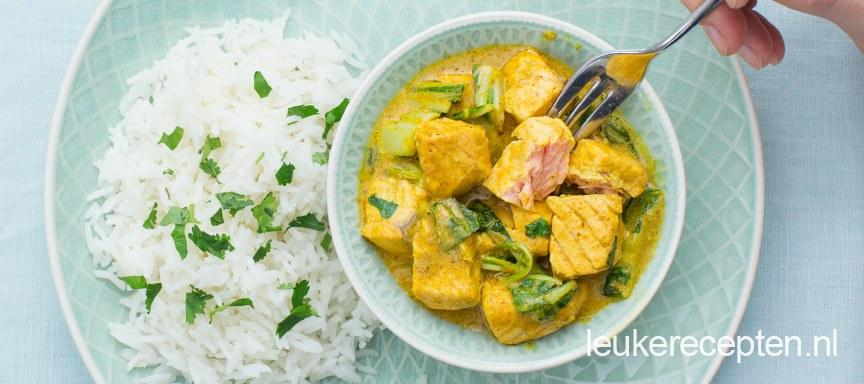

zalm curry met paksoi

ingredienten
- 1 ui
- 2 flinke eetlepels kruidenpasta korma (bv Patak of Kumar’s)
- 200 ml kokosmelk of kokoscreme
- 130 gr rijst
- 200 gr paksoi
- verse koriander
- 250 gr zalm
- olie om te bakken
bereiding
- Kook de rijst volgens de verpakking. Snipper ondertussen de ui fijn en fruit deze even aan in de olie. Voeg
de kruidenpasta toe en roer goed door. Snijd de zalm in blokken en verwarm 2 minuutjes in de curry pasta.
- Roer dan de kokosmelk of creme er door en daarna ook de gesneden paksoi. Laat nog 5 minuten pruttelen.
Serveer de rijst met de zalm curry en wat verse koriander. Probeer ook eens een andere smaak curry zoals
tandoori voor een wat pittiger gerecht of de masala.